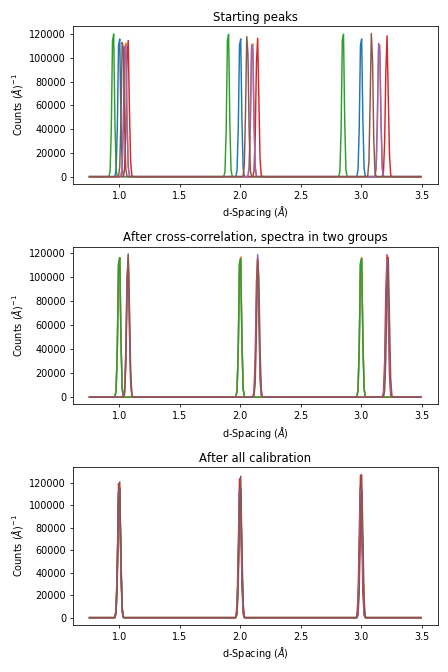
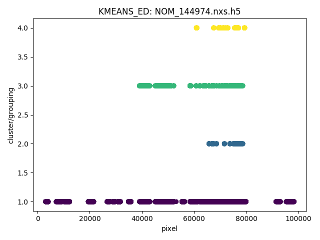
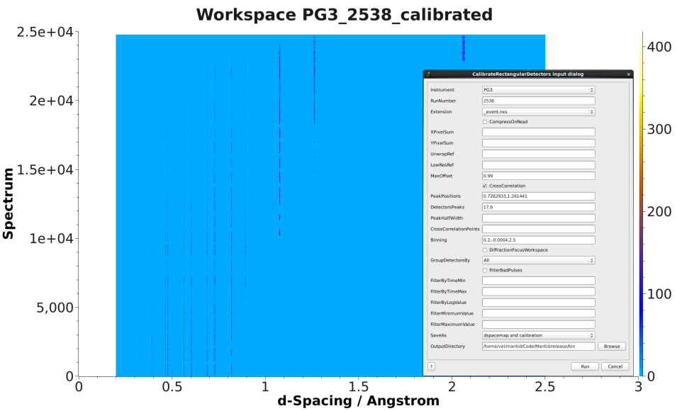
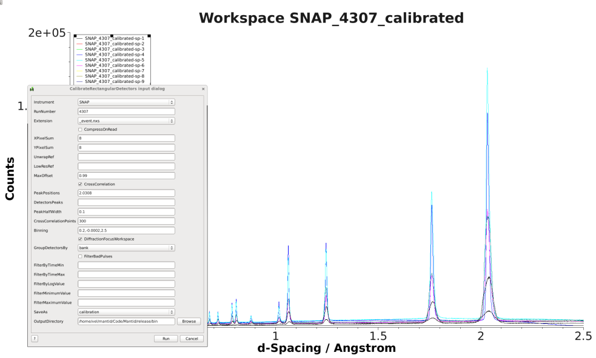
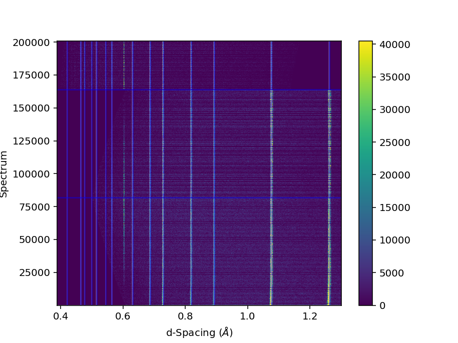
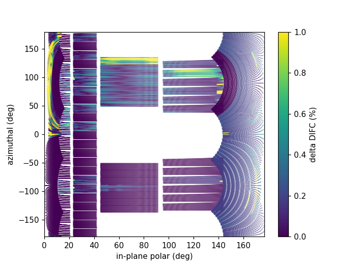
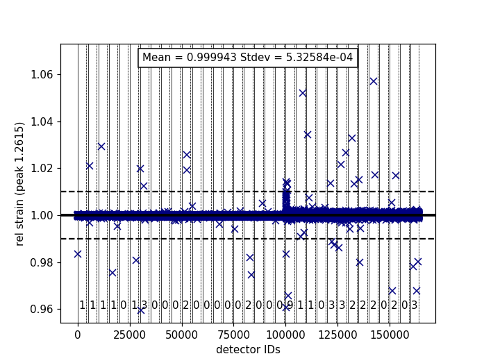
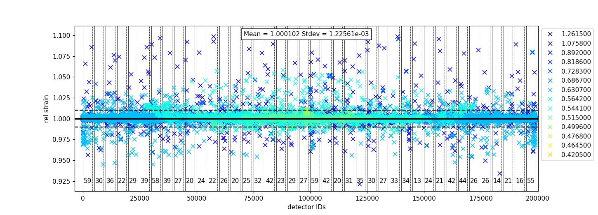
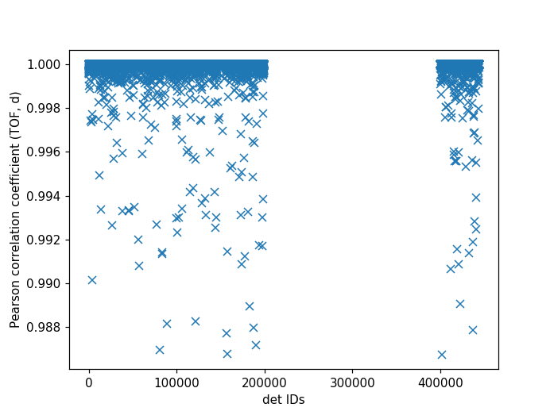
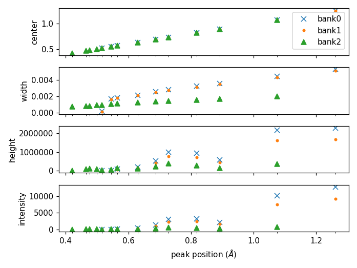

Time-of-Flight Powder Diffraction Calibration#
Data Required#
To get a good calibration you will want good statistics with calibration data. For most of the calibration algorithms, this means having enough statistics in a single pixel to fit individual peaks or to cross-correlate data. Some of the calibration algorithms also require knowing the ideal positions of peaks in d-spacing. For these algorithms, it is not uncommen to calibrate the instrument, refine the results using a Rietveld program, then using the updated peak positions to calibrate again. Often the sample selected will be diamond.
Calculating Calibration#
Relative to a specific spectrum#
This technique of calibration uses a reference spectrum to calibrate
the rest of the instrument to. The main algorithm that does this is
GetDetectorOffsets whose
InputWorkspace is the OutputWorkspace of CrossCorrelate. Generically the workflow is
Load the calibration data
Convert the X-Units to d-spacing using ConvertUnits. The “offsets” calculated are relative reference spectrum’s geometry.
Run Rebin to set a common d-spacing bin structure across all of the spectra, you will need fine enough bins to allow fitting of your peak. Whatever you choose, make a note of it you may need it later.
Take a look at the data using the SpectrumViewer or a color map plot, find the workspace index of a spectrum that has the peak close to the known reference position. This will be the reference spectra and will be used in the next step.
Cross correlate the spectrum with CrossCorrelate, enter the workspace index as the
ReferenceSpectrayou found in the last step.Run GetDetectorOffsets, the InputWorkspace if the output from CrossCorrelate. Use the rebinning step you made a note of in step 3 as the step parameter, and DReference as the expected value of the reference peak that you are fitting to. XMax and XMin define the window around the reference peak to search for the peak in each spectra, if you find that some spectra do not find the peak try increasing those values.
The output is an
OffsetsWorspace. See below for how to save, load, and use the workspace.
Using known peak positions#
These techniques require knowing the precise location, in d-space, of diffraction peaks and benefit from knowing more. GetDetOffsetsMultiPeaks (deprecated) and PDCalibration are the main choices for this. Both algorithms fit individual peak positions and use those fits to generate the calibration information.
The workflow for GetDetOffsetsMultiPeaks (deprecated) is identical to that of GetDetectorOffsets without the cross-correlation step (5). The main difference in the operation of the algorithm is that it essentially calculates an offset from each peak then calculates a weighted average of those offsets for the individual spectrum.
The workflow for PDCalibration differs significantly from that of the other calibration techniques. It requires the data to be in time-of-flight, then uses either the instrument geometry, or a previous calibration, to convert the peak positions to time-of-flight. The individual peaks fits are then used to calculate \(DIFC\) values directly. The benefit of this method, is that it allows for calibrating starting from a “good” calibration, rather than returning back to the instrument geometry. The steps for using this are
Load the calibration data
Run PDCalibration with appropriate properties
The
OutputCalibrationTableis aTableWorkspace. See below for how to save, load, and use the workspace.
Workflow algorithms#
CalibrateRectangularDetectors (deprecated) will do most of the workflow for you, including applying the calibration to the data. While its name suggests it is only for a particular subset of detector types, it is not. It has many options for selecting between GetDetectorOffsets and GetDetOffsetsMultiPeaks (deprecated).
Group Calibration#
Some script have been created that provided a workflow for calibrating the instrument in groups using a combination of CrossCorrelate, GetDetectorOffsets and PDCalibration.
It works by performing the cross-correlations on only the detectors within a group, after which the grouped detectors are merge together to use with PDCalibration. The difc from the PDCalibration and cross-correlation are combined using CombineDiffCal
The workflow follows these step:
Load data, usually diamond
Convert to d-spacing
CrossCorrelate a portion of the instrument according to the group information
GetDetectorOffsets to calculate offsets for individual pixels with a group
ConvertDiffCal to convert these constants to \(DIFC_{CC}\)
Use \(DIFC_{CC}\) to convert the origonal data to d-spacing. DiffractionFocus allows for combining a portion of the instrument into a single spectrum for improved statistics
Pick an arbitrary constant, \(DIFC_{arb}\) to convert this combined spectrum back to time-of-flight
PDCalibration the combined spectrum to determine a conversion constant \(DIFC_{PD}\)
Use CombineDiffCal to combine \(DIFC_{CC}\), \(DIFC_{arb}\), and \(DIFC_{PD}\) into a new calibration constant, \(DIFC_{eff}\)
# create a fake starting workspace in d-spacing then convert to TOF for calibration
myFunc = "name=Gaussian, PeakCentre=1, Height=100, Sigma=0.01;name=Gaussian, PeakCentre=2, Height=100, Sigma=0.01;name=Gaussian, PeakCentre=3, Height=100, Sigma=0.01"
ws_d = CreateSampleWorkspace("Event","User Defined", myFunc, BankPixelWidth=1, XUnit='dSpacing', XMax=5, BinWidth=0.001, NumEvents=10000, NumBanks=6)
for n in range(1,7):
MoveInstrumentComponent(ws_d, ComponentName=f'bank{n}', X=1, Y=0, Z=1, RelativePosition=False)
# Offset the different spectra
ws_d = ScaleX(ws_d, Factor=1.05, IndexMin=1, IndexMax=1)
ws_d = ScaleX(ws_d, Factor=0.95, IndexMin=2, IndexMax=2)
ws_d = ScaleX(ws_d, Factor=1.05, IndexMin=3, IndexMax=5)
ws_d = ScaleX(ws_d, Factor=1.02, IndexMin=3, IndexMax=4)
ws_d = ScaleX(ws_d, Factor=0.98, IndexMin=4, IndexMax=5)
ws_d = Rebin(ws_d, '0,0.001,5')
ws = ConvertUnits(ws_d, Target='TOF')
# Make 2 groups of 3 detectors each
groups, _, _, = CreateGroupingWorkspace(InputWorkspace=ws, ComponentName='basic_rect', CustomGroupingString='1-3,4-6')
# starting DIFC are all the same
detectorTable = CreateDetectorTable(ws)
print("DetID DIFC")
for detid, difc in zip(detectorTable.column('Detector ID(s)'), detectorTable.column('DIFC')):
print(f'{detid:>5} {difc:.1f}')
DetID DIFC
1 2208.3
2 2208.3
3 2208.3
4 2208.3
5 2208.3
6 2208.3
from Calibration.tofpd.group_calibration import cc_calibrate_groups
cc_diffcal, to_skip = cc_calibrate_groups(ws,
groups,
DReference=2.0,
Xmin=1.75,
Xmax=2.25,
OffsetThreshold=1.0)
print("DetID DIFC")
for detid, difc in zip(cc_diffcal.column('detid'), cc_diffcal.column('difc')):
print(f'{detid:>5} {difc:.1f}')
DetID DIFC
1 2208.3
2 2318.6
3 2098.0
4 2208.3
5 2161.2
6 2115.7
# In this case, cycling through cross correlation until offset converges.
cc_diffcal, to_skip = cc_calibrate_groups(ws,
groups,
DReference=2.0,
Xmin=1.75,
Xmax=2.25,
OffsetThreshold=1E-4)
print("DetID DIFC")
for detid, difc in zip(cc_diffcal.column('detid'), cc_diffcal.column('difc')):
print(f'{detid:>5} {difc:.1f}')
DetID DIFC
1 2208.3
2 2318.7
3 2097.9
4 2208.3
5 2164.1
6 2121.7
# Turn on cross correlation cycling but skip cross correlation for group-1.
cc_diffcal, to_skip = cc_calibrate_groups(ws,
groups,
DReference=2.0,
Xmin=1.75,
Xmax=2.25,
OffsetThreshold=1E-4,
SkipCrossCorrelation=[1])
print("DetID DIFC")
for detid, difc in zip(cc_diffcal.column('detid'), cc_diffcal.column('difc')):
print(f'{detid:>5} {difc:.1f}')
DetID DIFC
1 2208.3
2 2208.3
3 2208.3
4 2208.3
5 2164.1
6 2121.7
from Calibration.tofpd.group_calibration import pdcalibration_groups
diffcal = pdcalibration_groups(ws,
groups,
cc_diffcal,
to_skip,
PeakPositions = [1.0, 2.0, 3.0],
PeakFunction='Gaussian',
PeakWindow=0.4)
print("DetID DIFC")
for detid, difc in zip(diffcal.column('detid'), diffcal.column('difc')):
print(f'{detid:>5} {difc:.1f}')
DetID DIFC
1 2208.3
2 2208.3
3 2208.3
4 2365.6
5 2318.3
6 2272.8
The evolution in the calibration can be seen with
import matplotlib.pyplot as plt
from mantid import plots
ws_d = Rebin(ws_d, '0.75,0.01,3.5')
ApplyDiffCal(ws, CalibrationWorkspace=cc_diffcal)
ws_d_after_cc = ConvertUnits(ws, Target='dSpacing')
ws_d_after_cc = Rebin(ws_d_after_cc, '0.75,0.01,3.5')
ApplyDiffCal(ws, CalibrationWorkspace=diffcal)
ws_d_after_cc_and_pd = ConvertUnits(ws, Target='dSpacing')
ws_d_after_cc_and_pd = Rebin(ws_d_after_cc_and_pd, '0.75,0.01,3.5')
fig = plt.figure(figsize=(6.4,9.6))
ax1 = fig.add_subplot(311, projection = 'mantid')
ax2 = fig.add_subplot(312, projection = 'mantid')
ax3 = fig.add_subplot(313, projection = 'mantid')
for n in range(1,7):
ax1.plot(ws_d, specNum=n)
ax2.plot(ws_d_after_cc, specNum=n)
ax3.plot(ws_d_after_cc_and_pd, specNum=n)
ax1.set_title('Starting peaks')
ax2.set_title('After cross-correlation, spectra in two groups')
ax3.set_title('After all calibration')
fig.tight_layout()
#fig.savefig('tofpd_group_calibration.png')
fig.show()

The same complete calibration can just be run with just
group_calibration.do_group_calibration.
from Calibration.tofpd.group_calibration import do_group_calibration
diffcal = do_group_calibration(ws,
groups,
cc_kwargs={
"DReference": 2.0,
"Xmin": 1.75,
"Xmax": 2.25,
"OffsetThreshold": 1.0},
pdcal_kwargs={
"PeakPositions": [1.0, 2.0, 3.0],
"PeakFunction": 'Gaussian',
"PeakWindow": 0.4})
print("DetID DIFC")
for detid, difc in zip(diffcal.column('detid'), diffcal.column('difc')):
print(f'{detid:>5} {difc:.1f}')
DetID DIFC
1 2208.7
2 2319.0
3 2098.4
4 2368.8
5 2318.3
6 2269.5
The resulting diffcal can be saved with SaveDiffCal.
SaveDiffCal(CalibrationWorkspace=diffcal,
MaskWorkspace=mask,
Filename='calibration.h5')
Group calibration how-to’s#
Generate grouping file
The first stage of the group calibration is to generate suitable grouping scheme
for all spectra involved. The principle is to group similar spectra together.
A natural choice for generating grouping file is to use CreateGroupingWorkspace
algorithm which embodies several choices of grouping detectors according to physical geometry. A generic approach
has also been implemented into the framework of mantidtotalscattering,
which automatically groups input spectra according to the similarity among each other, based on a unsupervised clustering algorithm.
mantidtotalscattering has been deployed on SNS analysis cluster and therefore the generic grouping routine can be accessed easily
from analysis. To activate the mantidtotalscattering conda environment, one needs to first log into analysis cluster and the
following commands could be executed from terminal,
. /opt/anaconda/etc/profile.d/conda.sh
conda activate mantidtotalscattering
With the mantidtotalscattering conda environment active, here follows is provided a simple Python script for calling the generic grouping routine on analysis,
#!/usr/bin/env python
import sys
import json
from total_scattering.autogrouping.autogrouping import main
jsonfile = "/SNS/users/y8z/Temp/autogrouping_config.json"
with open(jsonfile, 'r') as jf:
config = json.load(jf)
# execute
main(config)
An example json file is presented below to control the grouping behavior,
{
"DiamondFile": "/SNS/NOM/IPTS-24637/nexus/NOM_144974.nxs.h5",
"MaskFile": "/SNS/users/y8z/Temp/mask144974.out",
"GroupingMethod": "KMEANS_ED",
"NumberOutputGroups": "4",
"StandardScaling": false,
"FittingFunctionParameters": "Mixing,Intensity,PeakCentre,FWHM",
"FitPeaksArgs": { "PeakFunction": "PseudoVoigt",
"PeakParameterNames": "Mixing",
"PeakParameterValues": "0.6",
"HighBackground": false,
"MinimumPeakHeight": 3,
"ConstrainPeakPositions": false
},
"DiamondPeaks": "0.8920,1.0758,1.2615",
"ParameterThresholds": { "PeakCentre": "(0.01,10.0)",
"Height": "(0.0,10000.0)"
},
"FilterByChi2": { "Enable": true,
"Value": 1e4
},
"OutputGroupingFile": "./outputgrouping.xml",
"OutputMaskFile": "./outputmask.txt",
"OutputFitParamFile": "./outputfitparamtable.nxs",
"CacheDir": "./tmp/",
"Plots": { "Grouping": true,
"ED_Features": true,
"PCA": true,
"KMeans_Elbow": true,
"KMeans_Silhouette": true}
}
and description for entries in the input json file is summarized in the following table,
Name |
Description |
|---|---|
DiamondFile |
Full name of the input nexus file. For calibration purpose, usually a diamond measurement will be used. |
MaskFile |
Full name of the input mask file. The file should contain a whole bunch of lines with a single integter in each line specifying the detector ID to be masked (index starting from 0). |
GroupingMethod |
The method to be used for grouping. Valid input could be |
NumberOutputGroups |
The number of groups to cluster all input spectra into. If using |
StandardScaling |
Whether or not to scale the input spectra by removing the mean and scaling to unit variance before clustering. |
WorkspaceIndexRange |
Range of workspace indeces to include in automatic grouping process. |
FittingFunctionParameters |
If |
FitPeaksArgs |
Refer to the input parameters for FitPeaks algorithm. |
DiamondPeaks |
If |
ParameterThresholds |
If |
FilterByChi2 |
If |
OutputGroupingFile |
Full name of the output grouping file. |
OutputMaskFile |
Full name of the output masking file. |
OutputFitParamFile |
If |
CacheDir |
Cache directory. |
Plots |
A series of boolean variables control the plotting options. |
Here, it is worth noting that detectors may be masked out as belonging to none of the generated groups.
For example, when using the ED method for defining the similarity between spectra, detectors will be masked out at the fitting stage if the corresponding spectra cannot be fitted successfully.
Following is presented the clustering result for a NOMAD diamond measurement data,


Note
For certain instruments (e.g., POWGEN), the automatic grouping routine may not work due to special d-space coverage for detectors.
In this case, one may need to treat various ranges of detectors individually (using the input entry WorkspaceIndexRange in the input json file) and also some of the groups may need to be manually specified.
Group calibration
Having the grouping file (and potentially the masking file) ready, one can then open Mantid workbench interface and trigger the group calibration routine, using a simple Python script, as presented below,
# import mantid algorithms, numpy and matplotlib
from mantid.simpleapi import *
import matplotlib.pyplot as plt
import numpy as np
from Calibration.tofpd import group_calibration
infile = "/SNS/NOM/shared/User_story_test/NOM_US-231_240/group_calib.json"
group_calibration.process_json(infile)
Here follows is presented a demo input json file,
{
"Calibrant": "161450",
"Groups": "/SNS/NOM/shared/User_story_test/NOM_US-231_240/outputgrouping.xml",
"Mask": "/SNS/NOM/shared/User_story_test/NOM_US-231_240/outputmask.xml",
"Instrument": "NOMAD",
"Date" : "2021_07_21",
"SampleEnvironment": "shifter",
"CalDirectory": "/SNS/NOM/shared/User_story_test/NOM_US-231_240/",
"CrossCorrelate": {"Step": 0.001,
"DReference": 1.2615,
"Xmin": 1.0,
"Xmax": 3.0,
"MaxDSpaceShift": 0.25,
"OffsetThreshold": 1E-4,
"SkipCrossCorrelation": [1,2,3]},
"PDCalibration": {"TofBinning": [300,0.01,16666],
"PeakFunction": "Gaussian",
"PeakWindow": 0.1,
"PeakWidthPercent": 0.001}
}
Parameters in the input json file should be self-explaining. Here only the Calibrant and Groups entries are mandatory. For CrossCorrelate entries, one can refer to the parameters for
CrossCorrelate and GetDetectorOffsets. For PDCalibration entries, one can refer to the parameters for PDCalibration. In the group calibration workflow, one of the crucial steps is to cross correlate spectra in a
single group. A cycling cross correlation scheme is introduced at this point to continue cross correlate spectra until the median value of the offset of all
spectra in a single group is below the preset threshold (specified by the OffsetThreshol parameter). If the OffsetThreshold is set to 1.0 or larger, that means no cycling of cross correlation will be conducted. The SkipCrossCorrelation parameter is to control the skipping of cross correlation for specified groups of spectra. For Xmin, Xmax, MaxDSpaceShift and OffsetThreshold parameters, they can be either provided with a single number or a list. When a single number is given, the value will apply to all groups, whereas if a list is given, each entry in the list will apply to each single group respectively.
After the group calibration is complete, one can then inspect the quality of calibration by generating various diagnostics plots as documented in Calibration Diagnostics.
Saving and Loading Calibration#
There are two basic formats for the calibration information. The legacy ascii format is described in CalFile. The newer HDF5 version is described alongside the description of calibration table.
Saving and loading the HDF5 format is done with SaveDiffCal and LoadDiffCal.
Saving and loading the legacy format is done with SaveCalFile and LoadCalFile. This
can be converted from an OffsetsWorkspace to a calibration table
using ConvertDiffCal.


Testing your Calibration#


The first thing that should be done is to convert the calibration
workspace (either table or OffsetsWorkspace to a workspace of
\(DIFC\) values to inspect using the instrument view. This can be done using
CalculateDIFC. The values of \(DIFC\)
should vary continuously across the detectors that are close to each
other (e.g. neighboring pixels in an LPSD).
You will need to test that the calibration managed to find a reasonable calibration constant for each of the spectra in your data. The easiest way to do this is to apply the calibration to your calibration data and check that the bragg peaks align as expected.
Load the instrument data using Load
Apply the calibration to the workspace using ApplyDiffCal (the calibration can be provided using the
CalibrationFile, theCalibrationWorkspace, orOffsetsWorkspace).Run ConvertUnits, to convert the data to d-spacing using the calibration.
Plot the workspace as a Color Fill plot, in the spectrum view, or a few spectra in a line plot.
Further insight can be gained by comparing the grouped (after aligning and focussing the data) spectra from a previous calibration or convert units to the newly calibrated version. This can be done using AlignAndFocusPowder with and without calibration information. In the end, a Rietveld refinement is the best test of the calibration.
Expanding on detector masking#
While many of the calibration methods will generate a mask based on the detectors calibrated, sometimes additional metrics for masking are desired. One way is to use DetectorDiagnostic. The result can be combined with an existing mask using
BinaryOperateMasks(InputWorkspace1='mask_from_cal', InputWorkspace2='mask_detdiag',
OperationType='OR', OutputWorkspace='mask_final')
Creating detector grouping#
To create a grouping workspace for SaveDiffCal you need to specify which detector pixels to combine to make an output spectrum. This is done using CreateGroupingWorkspace. An alternative is to generate a grouping file to load with LoadDetectorsGroupingFile.
Adjusting the Instrument Definition#
This section is out of date!
This approach attempts to correct the instrument component positions based on the calibration data. It can be more involved than applying the correction during focussing.
Perform a calibration using CalibrateRectangularDetectors (deprecated) or GetDetOffsetsMultiPeaks (deprecated). Only these algorithms can export the Diffraction Calibration Workspace required.
Run AlignComponents this will move aspects of the instrument to optimize the offsets. It can move any named aspect of the instrument including the sample and source positions. You will likely need to run this several times, perhaps focussing on a single bank at a time, and then the source and sample positions in order to get a good alignment.
Then either:
ExportGeometry will export the resulting geometry into a format that can be used to create a new XML instrument definition. The Mantid team at ORNL have tools to automate this for some instruments at the SNS.
At ISIS enter the resulting workspace as the calibration workspace into the DAE software when recording new runs. The calibrated workspace will be copied into the resulting NeXuS file of the run.
Calibration Diagnostics#
Pixel-by-pixel results#


There are some common ways of diagnosing the calibration results. One of the more common is to plot the aligned data in d-spacing. While this can be done via the “colorfill” plot or sliceviewer, a function has been created to annotate the plot with additional information. This can be done using the following code
from mantid.simpleapi import (ApplyDiffCal, ConvertUnits, LoadEventNexus, LoadInstrument, Rebin)
from Calibration.tofpd import diagnostics
LoadEventNexus(Filename='VULCAN_192227.nxs.h5', OutputWorkspace='ws')
Rebin(InputWorkspace='ws', OutputWorkspace='ws', Params=(5000,-.002,70000))
ApplyDiffCal(InputWorkspace='ws', CalibrationFile='VULCAN_Calibration_CC_4runs_hybrid.h5')
ConvertUnits(InputWorkspace='ws', Target="dSpacing")
diagnostics.plot2d(mtd['ws'], horiz_markers=[8*512*20, 2*8*512*20], xmax=1.3)
Here the expected peak positions are vertical lines, the horizontal lines are boundaries between banks. When run interactively, the zoom/pan tools are available.
DIFC of unwrapped instrument#
To check the consistency of pixel-level calibration, the DIFC value of each pixel can be compared between two different instrument calibrations. The percent change in DIFC value is plotted over a view of the unwrapped instrument where the horizontal and vertical axis corresponds to the polar and azimuthal angle, respectively. The azimuthal angle of 0 corresponds to the direction parallel of the positive Y-axis in 3D space.
Below is an example of the change in DIFC between two different calibrations of the NOMAD instrument.


This plot can be generated several different ways: by using calibration files,
calibration workspaces, or resulting workspaces from CalculateDIFC.
The first input parameter is always required and represents the new calibration.
The second parameter is optional and represents the old calibration. When it is
not specified, the default instrument geometry is used for comparison. Masks can
be included by providing a mask using the mask parameter. To control the
scale of the plot, a tuple of the minimum and maximum percentage can be specified
for the vrange parameter.
from Calibration.tofpd import diagnostics
# Use filenames to generate the plot
fig, ax = diagnostics.difc_plot2d("NOM_calibrate_d135279_2019_11_28.h5", "NOM_calibrate_d131573_2019_08_18.h5")
When calibration tables are used as inputs, an additional workspace parameter
is needed (instr_ws) to hold the instrument definition. This can be the GroupingWorkspace
generated with the calibration tables from LoadDiffCal as seen below.
from mantid.simpleapi import LoadDiffCal
from Calibration.tofpd import diagnostics
# Use calibration tables to generate the plot
LoadDiffCal(Filename="NOM_calibrate_d135279_2019_11_28.h5", WorkspaceName="new")
LoadDiffCal(Filename="NOM_calibrate_d131573_2019_08_18.h5", WorkspaceName="old")
fig, ax = diagnostics.difc_plot2d("new_cal", "old_cal", instr_ws="new_group")
Finally, workspaces with DIFC values can be used directly:
from mantid.simpleapi import CalculateDIFC, LoadDiffCal
from Calibration.tofpd import diagnostics
# Use the results from CalculateDIFC directly
LoadDiffCal(Filename="NOM_calibrate_d135279_2019_11_28.h5", WorkspaceName="new")
LoadDiffCal(Filename="NOM_calibrate_d131573_2019_08_18.h5", WorkspaceName="old")
difc_new = CalculateDIFC(InputWorkspace="new_group", CalibrationWorkspace="new_cal")
difc_old = CalculateDIFC(InputWorkspace="old_group", CalibrationWorkspace="old_cal")
fig, ax = diagnostics.difc_plot2d(difc_new, difc_old)
A mask can also be applied with a MaskWorkspace to hide pixels from the plot:
from mantid.simpleapi import LoadDiffCal
from Calibration.tofpd import diagnostics
# Use calibration tables to generate the plot
LoadDiffCal(Filename="NOM_calibrate_d135279_2019_11_28.h5", WorkspaceName="new")
LoadDiffCal(Filename="NOM_calibrate_d131573_2019_08_18.h5", WorkspaceName="old")
fig, ax = diagnostics.difc_plot2d("new_cal", "old_cal", instr_ws="new_group", mask="new_mask")
Relative Strain#
Plotting the relative strain of the d-spacing for a peak to the nominal d value (\(\frac{observed}{expected}\)) can be used as another method to check the calibration consistency at the pixel level. The relative strain is plotted along the Y-axis for each detector pixel, with the mean and standard deviation reported on the plot. A solid black line is drawn at the mean, and two dashed lines are drawn above and below the mean by a threshold percentage (one percent of the mean by default). This can be used to determine which pixels are bad up to a specific threshold.
Below is an example of the relative strain plot for VULCAN at peak position 1.2615:


The plot shown above can be generated from the following script:
import numpy as np
from mantid.simpleapi import (LoadEventAndCompress, LoadInstrument, PDCalibration, Rebin)
from Calibration.tofpd import diagnostics
FILENAME = 'VULCAN_192227.nxs.h5'
CALFILE = 'VULCAN_Calibration_CC_4runs_hybrid.h5'
peakpositions = np.asarray(
(0.3117, 0.3257, 0.3499, 0.3916, 0.4205, 0.4645, 0.4768, 0.4996, 0.515, 0.5441, 0.5642, 0.6307, 0.6867,
0.7283, 0.8186, 0.892, 1.0758, 1.2615, 2.06))
LoadEventAndCompress(Filename=FILENAME, OutputWorkspace='ws', FilterBadPulses=0)
LoadInstrument(Workspace='ws', InstrumentName="VULCAN", RewriteSpectraMap='True')
Rebin(InputWorkspace='ws', OutputWorkspace='ws', Params=(5000, -.002, 70000))
PDCalibration(InputWorkspace='ws', TofBinning=(5000,-.002,70000),
PeakPositions=peakpositions,
MinimumPeakHeight=5,
OutputCalibrationTable='calib',
DiagnosticWorkspaces='diag')
dspacing = diagnostics.collect_peaks('diag_dspacing', 'dspacing', donor='diag_fitted',
infotype='dspacing')
strain = diagnostics.collect_peaks('diag_dspacing', 'strain', donor='diag_fitted')
fig, ax = diagnostics.plot_peakd('strain', 1.2615, drange=(0, 200000), plot_regions=True, show_bad_cnt=True)
To plot the relative strain for multiple peaks, an array of positions can be passed instead of a single value.
For example, using peakpositions in place of 1.2615 in the above example results in the relative strain for
all peaks being plotted as shown below.

The vertical lines shown in the plot are drawn between detector regions and can be used to report the
count of bad pixels found in each region. The solid vertical line indicates the start of a region,
while the dashed vertical line indicates the end of a region. The vertical lines can be turned off
with plot_regions=False and displaying the number of bad counts for each region can also be disabled
with show_bad_cnt=False. When plot_regions=False but show_bad_cnt=True, a single count of bad
pixels over the entire range is shown at the bottom center of the plot.
As seen in the above example, the x-range of the plot can be narrowed down using the drange option,
which accepts a tuple of the starting detector ID and ending detector ID to plot.
To adjust the horizontal bars above and below the mean, a percent can be passed to the threshold option.
Pearson Correlation Coefficient#
It can be useful to compare the linearity of the relationship between time of flight and d-spacing for each peak involved in calibration. In theory, the relationship between (TOF, d-spacing) will always be perfectly linear, but in practice, that is not always the case. This diagnostic plot primarily serves as a tool to ensure that the calibration makes sense, i.e., that a single DIFC parameter is enough to do the transformation. In the ideal case, all Pearson correlation coefficients will be close to 1. For more on Pearson correlation coefficients please see this wikipedia article. Below is an example plot for the Pearson correlation coefficient of (TOF, d-spacing).

The following script can be used to generate the above plot.
# import mantid algorithms, numpy and matplotlib
from mantid.simpleapi import *
import matplotlib.pyplot as plt
import numpy as np
from Calibration.tofpd import diagnostics
FILENAME = 'VULCAN_192226.nxs.h5' # 88 sec
# FILENAME = 'VULCAN_192227.nxs.h5' # 2.8 hour
CALFILE = 'VULCAN_Calibration_CC_4runs_hybrid.h5'
peakpositions = np.asarray(
(0.3117, 0.3257, 0.3499, 0.3916, 0.4205, 0.4645, 0.4768, 0.4996, 0.515, 0.5441, 0.5642, 0.6307, 0.6867,
0.7283, 0.8186, 0.892, 1.0758, 1.2615, 2.06))
peakpositions = peakpositions[peakpositions > 0.4]
peakpositions = peakpositions[peakpositions < 1.5]
peakpositions.sort()
LoadEventAndCompress(Filename=FILENAME, OutputWorkspace='ws', FilterBadPulses=0)
LoadInstrument(Workspace='ws', Filename="mantid/instrument/VULCAN_Definition.xml", RewriteSpectraMap='True')
Rebin(InputWorkspace='ws', OutputWorkspace='ws', Params=(5000, -.002, 70000))
PDCalibration(InputWorkspace='ws', TofBinning=(5000,-.002,70000),
PeakPositions=peakpositions,
MinimumPeakHeight=5,
OutputCalibrationTable='calib',
DiagnosticWorkspaces='diag')
center_tof = diagnostics.collect_fit_result('diag_fitparam', 'center_tof', peakpositions, donor='ws', infotype='centre')
fig, ax = diagnostics.plot_corr('center_tof')
Peak Information#
Plotting the fitted peak parameters for different instrument banks can also provide useful information for calibration diagnostics. The fitted peak parameters from FitPeaks (center, width, height, and intensity) are plotted for each bank at different peak positions. This can be used to help calibrate each group rather than individual detector pixels.


The above figure can be generated using the following script:
import numpy as np
from mantid.simpleapi import (AlignAndFocusPowder, ConvertUnits, FitPeaks, LoadEventAndCompress,
LoadDiffCal, LoadInstrument)
from Calibration.tofpd import diagnostics
FILENAME = 'VULCAN_192227.nxs.h5' # 2.8 hour
CALFILE = 'VULCAN_Calibration_CC_4runs_hybrid.h5'
peakpositions = np.asarray(
(0.3117, 0.3257, 0.3499, 0.3916, 0.4205, 0.4645, 0.4768, 0.4996, 0.515, 0.5441, 0.5642, 0.6307, 0.6867,
0.7283, 0.8186, 0.892, 1.0758, 1.2615, 2.06))
peakpositions = peakpositions[peakpositions > 0.4]
peakpositions = peakpositions[peakpositions < 1.5]
peakpositions.sort()
peakwindows = diagnostics.get_peakwindows(peakpositions)
LoadEventAndCompress(Filename=FILENAME, OutputWorkspace='ws', FilterBadPulses=0)
LoadInstrument(Workspace='ws', InstrumentName="VULCAN", RewriteSpectraMap='True')
LoadDiffCal(Filename=CALFILE, InputWorkspace='ws', WorkspaceName='VULCAN')
AlignAndFocusPowder(InputWorkspace='ws',
OutputWorkspace='focus',
GroupingWorkspace="VULCAN_group",
CalibrationWorkspace="VULCAN_cal",
MaskWorkspace="VULCAN_mask",
Dspacing=True,
Params="0.3,3e-4,1.5")
ConvertUnits(InputWorkspace='focus', OutputWorkspace='focus', Target='dSpacing', EMode='Elastic')
FitPeaks(InputWorkspace='focus',
OutputWorkspace='output',
PeakFunction='Gaussian',
RawPeakParameters=False,
HighBackground=False, # observe background
ConstrainPeakPositions=False,
MinimumPeakHeight=3,
PeakCenters=peakpositions,
FitWindowBoundaryList=peakwindows,
FittedPeaksWorkspace='fitted',
OutputPeakParametersWorkspace='parameters')
fig, ax = diagnostics.plot_peak_info('parameters', peakpositions)
Category: Calibration